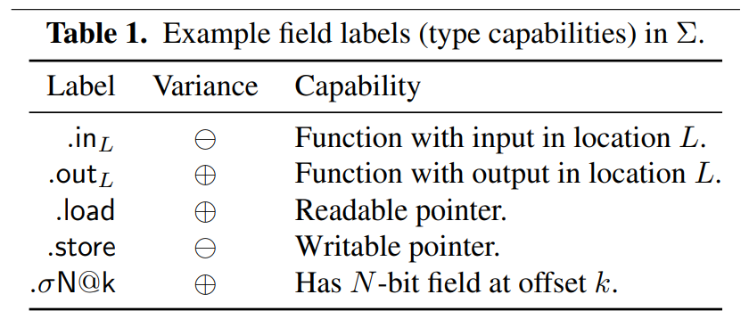

NotDec: WebAssembly Decompiler and Static Analysis Framework
NotDec is
- A project that aims to demystify the internal of decompiler.
- A webassembly decompiler that can experiment with new decompiler techniques.
- Variable Recovery
- Structual Analysis
中文
NotDec: 反编译器原理分析
本项目旨在：
- 学习现有反编译器的原理，系统地总结现有反编译器的工作，算法
- 选择合适的算法，尝试实现自己的反编译器
资料收集
学习阶段：
-
LLVM IR基础：只要达到能手写LLVM IR的程度就行。即主要理解各种语言特性对应的是什么样的LLVM IR代码。同时理解带alloca的半SSA形式，即alloca里的变量是非SSA，外面的是SSA。
- llvm-tutor
- ollvm源码
-
SSA与编译优化基础
- 《Engineering a compiler》 上来先看9.3章，深入研读。其他的章节没那么重要
- 再找找其他讲过SSA的中文书？
关于SSA的实验
- mem2reg 实验指导 · GitBook (buaa-se-compiling.github.io)
- Lv9+.4. SSA 形式 - 北京大学编译实践课程在线文档 | 北大编译实践在线文档 (pku-minic.github.io)
其他不错的资料：
-
反编译
资料
规划：基于LLVM IR的反编译
为什么要使用LLVM IR？
- 之后可以直接对接SVF，得到较好的指针分析结果。
优先实现wasm的反编译。
- Wasm转LLVM IR
- WAVM是一个基于LLVM的wasm的JIT，有部分逻辑是WASM转 LLVM IR
- 生成的IR不够简洁，有很多为了编译到汇编的冗余的内容
- WAVM是一个基于LLVM的wasm的JIT，有部分逻辑是WASM转 LLVM IR
- TODO
规划：反编译阶段

图片来自Static Single Assignment for Decompilation
反编译中的关键算法： Type Recovery（通过指令约束推导类型） Structual Analysis(恢复控制流)
- 前端：将字节码转为LLVM IR
- 中端：优化与分析
- 分析函数参数、分析callee saved register (wasm可以跳过这个阶段)
- SSA构建：使得前端可以有些冗余的alloca，由SSA构建来将相关alloca消除。 （编译原理相关）
- GVNGCM：Global Value Numbering and Global Code Motion 优化算法，有强大的优化能力，有助于反混淆等。（编译原理相关）
- 内存分析：将各种通过内存访问的变量显式地恢复出来。可能要用到指针分析算法，类型恢复等。关键词：Memory SSA。
- 后端：高层控制流恢复，将字节码转为AST，打印为高级语言的形式。
项目架构与工具
由于基于LLVM IR，因此语言采用C++。
开发环境：VSCode + CMake。将Wabt，LLVM等作为CMake的外部依赖。
开发环境搭建 - DevContainer
2023年9月7日注：由于对LLVM的调试需求越来越多，项目转为使用本地源码编译的LLVM（RelWithDebInfo或Debug build），且编译得到的二进制文件过大，因此不再推荐使用DevContainer。
VSCode DevContainer。出于性能考虑，在clone时可以直接clone到wsl的ext4文件系统里。
- 安装Docker Desktop on Windows： https://docs.docker.com/desktop/install/windows-install/ （无论是家庭版还是专业版均可）
- 其他系统直接安装docker
- 用vscode打开代码，安装Dev Containers插件，按Ctrl-Shift-P 然后输入查找
Remote-Containers: Rebuild and Reopen in container. - 等待构建，构建完成后会直接进入开发环境中。
- 安装CMake相关插件，toolkit选clang。
如果出现了无法使用windows侧的ssh-agent提供的ssh key的forward功能： https://stackoverflow.com/questions/72293035/error-communication-with-agent-failed-when-ssh-auth-sock-is-set-but-ssh-agent
开发环境搭建 - Linux
基于Ubuntu系统。
- 软件安装
- apt安装
sudo apt install wabt python-is-python3 clang-14 cmake zlib1g-dev g++ - 安装wasi-sdk到/opt
wget https://github.com/WebAssembly/wasi-sdk/releases/download/wasi-sdk-20/wasi-sdk-20.0-linux.tar.gz -P /tmp sudo tar xf /tmp/wasi-sdk-20.0-linux.tar.gz -C /opt
- apt安装
- clone 本仓库
- 安装LLVM 14
- 方式1：下载提前构建好的LLVM，解压得到
llvm-14.0.6.obj文件夹，放到项目根目录。 - 方式2：执行
scripts/build-debug-llvm.sh脚本，下载并构建LLVM源码。中途可能遇到内存不足的情况，需要手动降低并行数量到1。 成功构建后可以将llvm-14.0.6.obj文件夹打包发送给其他人。
- 方式1：下载提前构建好的LLVM，解压得到
- cmake build本仓库
代码调试
直接使用自带的C/C++调试，不知道为什么会非常慢，gdb执行backtrace要卡3秒，各种step命令要卡5-6秒。因此安装使用vscode的CodeLLDB插件。
代码补全使用clangd插件。根据提示禁用Intellisense，然后根据插件提示确认下载clangd。
提交代码前
- 写好commit message，简要概况所有的修改。
- 检查添加的代码的注释和文档是否充足。
TODO
-
反编译器自身：能够对“内存”中的变量也构建SSA进行优化。
-
最终的结果能够很好地重编译。
-
反编译器实现过程尽量记录完善的文档，未来考虑整理扩写为系列教程。
-
将wasm lift到LLVM IR
- 支持将wasm内存直接映射到某个基地址，从而直接支持运行，以及memory grow相关指令。
- 支持DWARF调试信息，从而映射回原wat，wasm
-
设计一个映射，将lift之后的IR反向转回wasm
LLVM Basics
资料
LLVM-Techniques-Tips-and-Best-Practies（中文版）
如何操作LLVM IR：
- https://mukulrathi.com/create-your-own-programming-language/llvm-ir-cpp-api-tutorial/
- 可以使用
llc -march=cpp： https://stackoverflow.com/questions/7787308/how-can-i-declare-a-global-variable-in-llvm - https://llvm.org/docs/LangRef.html 查询IR
中端优化：
- 实现自己的mem2reg(SSA construction)：https://www.zzzconsulting.se/2018/07/16/llvm-exercise.html
- 中端优化为什么这么神奇：https://blog.matthieud.me/2020/exploring-clang-llvm-optimization-on-programming-horror/
YouTube的LLVM频道里有很多不错的视频。
-
2019 LLVM Developers’ Meeting: E. Christopher & J. Doerfert “Introduction to LLVM”
果然后端的水很深啊。
-
2019 EuroLLVM Developers’ Meeting: V. Bridgers & F. Piovezan “LLVM IR Tutorial - Phis, GEPs and other things, oh my! - Vince Bridgers (Intel Corporation)”》
讲getelementptr指令讲得特别好，要是当时理解debug info metadata的时候看了这个就好了。
-
2019 LLVM Developers’ Meeting: J. Paquette & F. Hahn “Getting Started With LLVM: Basics”
前半 讲了LLVM IR Pass需要考虑到的一些东西，users的概念，讲了移除基本块和指令时需要注意的。 后半部分讲Backend Pass也非常不错。
-
2019 LLVM Developers’ Meeting: S. Haastregt & A. Stulova “An overview of Clang ”
讲了clang前端的架构。和之前想象中有些不一样。先是driver，然后是前端：词法分析语法分析，生成AST后codegen生成IR。
-
2017 LLVM Developers’ Meeting: D. Michael “XRay in LLVM: Function Call Tracing and Analysis ”
非常不错的Hook介入的框架
-
2018 EuroLLVM Developers’ Meeting: C. Hubain & C. Tessier “Implementing an LLVM based Dynamic Binary Instrumentation framework - Charles Hubain
是Quarkslab的那个QBDI，有时间真得好好学学。
-
2017 LLVM Developers’ Meeting: “Challenges when building an LLVM bitcode Obfuscator ”
汇编混淆确实需要考虑很多情况。。
-
2014 LLVM Developers’ Meeting: “Debug Info Tutorial ”
-
2019 LLVM Developers’ Meeting: S. Haastregt & A. Stulova “An overview of Clang ”
讲了clang前端的架构。和之前想象中有些不一样。先是driver，然后是前端：词法分析语法分析，生成AST后codegen生成IR。
-
2017 LLVM Developers’ Meeting: D. Michael “XRay in LLVM: Function Call Tracing and Analysis
非常不错的Hook介入的框架
-
2018 EuroLLVM Developers’ Meeting: C. Hubain & C. Tessier “Implementing an LLVM based Dynamic Binary Instrumentation framework - Charles Hubain
是Quarkslab的那个QBDI，有时间真得好好学学。
-
2017 LLVM Developers’ Meeting: “Challenges when building an LLVM bitcode Obfuscator ”
汇编混淆确实需要考虑很多情况。
其他：
- language server
- 《Getting Started with LLVM Core Libraries》前端代码转换的部分
debug
打印使用llvm::outs() << xxx;直接打印llvm Value
声明全局变量
Global variable definitions must be initialized.
Global variables in other translation units can also be declared, in which case they don’t have an initializer.
dso_local看作是C语言的static，在同一个编译单元内
LinkageTypes
external是默认的，如果没有initializer就会带一个external，如果有就没有修饰符，正常的符号。
嵌套的指令 nested instrucitons
https://lists.llvm.org/pipermail/llvm-dev/2015-October/091467.html
使用IRBuilder创建的这个其实不是嵌套的指令，LLVM也不支持嵌套的指令，而是创建了GEP constant expression。这种表达式比指令更好，同时蕴含着没有副作用的语义。
PassManger
LLVM PASS的管理有两种实现
- LegacyPass Manger
- NewPass Manger
传统的LegacyPM有一些不足，例如Analysis Pass不能缓存分析的信息导致重复分析等。NewPM将Analysis和Pass做了区分。在LegacyPM中存在过多的全局变量与registries，每个Pass都需要通过宏来注册，NewPM改进了这一点，当然还有内联函数分析等其他优化。LLVM12使用的是LegacyPassManager，13之后默认使用的是NewPassManager，本项目也使采用NewPassManager。
运行与管理
LLVM API允许在应用程序中嵌入LLVM Pass，并将其作为库调用。
调试
我们基于 vscode开发，使用codelldb插件。发现无法下条件断点。
- 首先下普通断点
- 使用
breakpoint list查看断点编号 - 使用
breakpoint modify 1 -c "((int64_t) (ci->getSExtValue()) < -100)"这样的命令给断点增加条件
更多使用方式见lldb使用教程
修改LLVM值的类型
LLVM值的类型，基于def-use关系，其实利用类型转换还是可以灵活变动。比如一个整数，虽然可能有一些加法运算，但是你还是可以强制把它设成指针类型，然后在每个使用点插入ptrtoint指令转回去。
有些LLVM值的类型，修改起来非常麻烦。尤其是函数的参数和返回值类型。函数也是GlobalValue，甚至是Constant。
NotDec Development Document
NotDec的项目文档。
反编译器前端
现有的反编译器内部算法往往是通用的，仅需要编写新的转IR即可支持新的语言。
WebAssembly Frontend
wasm frontend 负责将WASM字节码转为LLVM IR。
LLVM的好处就在于可以先生成比较差的IR，然后通过优化Pass不断修补。
WASM 现有工具
- WAVM也是一个基于LLVM的带JIT功能的runtime。C++编写
WAVM\Lib\LLVMJIT\LLVMCompile.cppLLVMJIT::compileModule这个函数应该是编译入口点，很多可以参考。WAVM\Lib\LLVMJIT\EmitFunction.cppEmitFunctionContext::emit 编译每个函数。关键是decoder.decodeOp(*this);这句，会根据不同的指令访问对应的同名函数，比如看WAVM\Lib\LLVMJIT\EmitCore.cpp，遇到block指令会调用EmitFunctionContext::block函数。
- aWsm 也是一个基于LLVM的带JIT功能的runtime。虽然是rust写的，但是还是用的LLVM C++ API，转换相关的逻辑也都是可以抄的。
- WAMR wasm-micro-runtime 基于LLVM的，但是是C语言，使用LLVM-C-API，我们打算用的是C++的API。
- 真的是自己写的字节码解析器好像。。。wasm_loader.c wasm.h
- 有相关wasm到LLVM IR的转换可以参考：aot_llvm_extra.cpp
代码架构
-
wasm模块解析器：基于wabt。wasm-c-api不太行因为是用来embed一个WASM VM的。
- 目前直接通过
- 未来考虑通过find_package直接使用： https://github.com/WebAssembly/wabt/pull/1980
-
首先由于最后都是转IR，所以BaseContext保存LLVM相关的Context。其实可以作为全局变量，为了以后可能的并行，把这类全局变量都搞到一个类里。
-
wasm::Context是相关生成的代码依附的数据结构，保存比如wabt::Module这种Context。为了方便应用，增加了对BaseContext的引用，对llvmCtx的引用等等。
Specification
需要了解LLVM IR的语义：
- LLVM Language Reference Manual
- 2019 EuroLLVM Developers’ Meeting: V. Bridgers & F. Piovezan “LLVM IR Tutorial - Phis, GEPs ...” - YouTube
和WASM的语义：Modules — WebAssembly 2.0 (Draft 2022-09-27) 注意现在直接翻标准是新release的2.0标准了。我们暂时先支持1.0标准，wabt现在也仅支持1.0，如果文件头里写version为2会报错。1.0的标准可以看这里。 不确定每个指令的语义，看这种地方。
- 名字比较难处理，wasm的name section允许重名，而且wasm中因为是二进制格式，理论上名字可以取任意utf-8。那边wat格式的定义也有类似的问题。但是wabt似乎已经处理了相关的问题？
- 在src\binary-reader-ir.cc里的BinaryReaderIR::GetUniqueName函数，如果重名了会加数字后缀。
- 类型：i32 i64 对应LLVM中的i32 i64, f32 f64对应LLVM中的float double。
- 每个wasm的Global值转为llvm中一个的global值。相关访问只有Load和Store指令。
- 名字直接使用wabt那边传过来的名字
名字更改为global_<ind>_<original_name>这种格式，即在原来名字前加上前缀标识。 - Linkage Types 选择internal。被导出的更改为external。
- 根据mutable，设置llvm那边的const属性
- 处理init_expr
- 名字直接使用wabt那边传过来的名字
- 内存：转为一个global数组，u8 array。
- 内存初始化：似乎LLVM IR里一个数组不能部分初始化。很多0也没办法。就这样吧
- 内存访问：计算关于u8的偏移（get element ptr），然后再转为对应的类型指针load出来。即LLVM中
[大数字 x i8]类型。因为只是分析，所有不用考虑内存增长的事情。
- 函数
- 每个Local转化为函数开头的一个alloca。
- 非直接跳转 callind
指令、栈、控制流的处理
参考WAVM，见顶部现有工具一节。参考栈验证逻辑。能保留的最好直接解码为SSA。这里的block直接考虑Multi Value Extension，防止以后架构需要重构，但是函数返回多个值的先不支持。
- 每个栈上元素对应一个SSA的Value。某种形式上可以维护一个Value栈（作为局部变量，不需要作为Context）。
- 控制流跳转维护一个block的嵌套栈，保存br时跳转的目标。关键是如何在找到跳转目标的同时，把栈弹到对应的值。
- 处理Block的时候，这里用递归和用栈都可以。选择用实现起来更简单的递归。aWsm好像是递归的写法，WAVM好像是用栈，复杂一点。
- loop和block的区别在于，给phi赋值，然后用Phi替换栈上值的地方不同。一个是基本块开头，一个是基本块结尾
- 函数体大致也算一个Block块，但是labelType写Func。
控制流指令的处理，与SSA生成
visitFunction：
-
创建allocaBlock，分配参数和local空间
-
创建alloca -> entry边，创建return块备用
-
调用visitBlock函数（visitBlock函数必须把所有的结束跳转都引导到exit块）
-
创建结尾的return指令。（visitBlock内部处理的时候只有br，return也看作特殊的br，函数只允许在结尾返回）
递归的基本块生成算法visitBlock： 要求与保证：
- 要求算法的整体表现类似于给定类型的单个指令
- 要求调用者提供的entry和exit中，需要创建Phi的那个为空基本块（但是可以有Phi指令），便于创建Phi节点。
- 保证结束的时候跳转到exit块。不会有其他控制流。
注：
- 没必要再用一个额外的stack防止访问更深元素，因为调用过了wabt的validate
调用visitBlock前，根据block类型
- Block类型：创建新的exit块，替换原来exit，处理完毕后新的exit作为entry继续生成指令，旧的exit还是exit
- Loop类型：创建新的entry块，替换原来entry。loop结束也一样。
visitBlock：
- 先创建好跳转目标，Phi节点，用这些设置好BreakoutTarget结构体，压入栈中：
- 根据是loop还是block类型的块创建Phi。如果是Loop，直接把当前栈上的值弹出来，作为phi的operand，然后把phi push回去，替换。如果是block，先创建空的Phi。（等后面结束的时候再从栈上加operand。
- 保存当前value栈的情况。
- 依次遍历每个指令生成。
- 普通的指令根据指令语义，从value stack中取值，
- 如果遇到了跳转指令：
- 如果跳转的目标是普通基本块，则从栈上取值加入到对应的Phi中，
- 块结束的时候，不需要主动跳转到exit，因为exit不一定是当前block的exit，因为在Loop的情况下，结尾没有额外创建基本块，所以不需要特殊处理。Block结尾的跳转交给外面处理。
- Block结束时，在end前，处理隐含跳转到结束块。由于类型检查，不会有多余的值，不需要unwinding弹出栈。
控制流指令的处理：
- br指令，其后是stack可以是任何类型。为了处理这种情况，我们直接增加unreachable标识，无视这些指令。
- 对于Block
- 对于Loop，由于结尾是从Loop离开的唯一方式。如果有br指令封锁了结尾，则不可能从这个loop结尾离开了。此时直接保留UnReachableState
- block，loop分别对应在结尾，开头，增加一个label。注意到block只需要为return的值创建Phi，loop需要对参数创建Phi。
- if对应一些label和br_if，br代表直接跳转，br_if同理，根据语义找到对应的跳转目标，生成条件跳转即可。
- br_table看似比较麻烦，看了下和LLVM的switch语句对应得非常好啊。也是根据不同的值跳转到不同的边。
最开始的时候先写一个类型检查，打印出每个指令后当前栈上的类型情况的代码，然后再加生成相关的东西。
wabt那边代表Block的结构体看wabt的src\ir.h 383行struct Block这边。
std::string label直接放到BasicBlock的名字里面BlockDeclaration decl和FuncDeclaration是一个类型ExprList exprsLocation end_loc代表输入文件里的位置，暂时不管，除非后面想加debug信息
多个参数和返回值的时候，顺序：
- 函数参数逆序遍历（pop），同时从栈上pop出来。
- 函数返回值顺序遍历，同时push到栈上。
查OpCode看wabt/include/wabt/opcode.def。Opcode和ExprType之间的关系看src\lexer-keywords.txt，或者看wabt/src/lexer-keywords.txt里面对应的Opcode创建了什么Expr，或者看src\binary-reader-ir.cc里找对应的指令到底创建了哪种Expr类。
这里面的类继承关系看 src\ir.h。其实就是搞了一个ExprType，然后在onXXX指令的函数处直接创建了这个类型的Expr，导致opcode和expr之间没有明确的对应关系。
运算指令的处理
- 简单的可以对着这个找指令https://llvm.org/docs/LangRef.html。
- 可以找llvm intrinsic，例如fabs指令使用了对应的
Intrinsic::fabs - 更复杂的可以自己手写llvm函数，然后直接调自己写的函数，之后看看要不要内联什么的
资料：
- WAMR里，intrinsic的实现 https://github.com/bytecodealliance/wasm-micro-runtime/blob/d309091706f2fbfc3ccca2907226f57db4d612f3/core/iwasm/aot/aot_intrinsic.c
- WAVM里，intrinsic的实现（使用irBuilder） https://github.com/WAVM/WAVM/blob/79c3aa29366615d9b1593cd527e5b4b94cc6072a/Lib/LLVMJIT/EmitNumeric.cpp
比较 - 浮点数
参照https://www.w3.org/TR/wasm-core-1/#-hrefop-feqmathrmfeq_n-z_1-z_2 和https://llvm.org/docs/LangRef.html#id309 对比语义
- feq在wasm中，如果有nan就返回0，反过来只有无nan才返回true，所以采用
fcmp oeq。 - 而fne，有nan就返回1，所以要用
fcmp une
SIMD
参照 https://github.com/WebAssembly/simd/blob/master/proposals/simd/SIMD.md 指令 https://github.com/zeux/wasm-simd/blob/master/Instructions.md https://nemequ.github.io/waspr/instructions
指令格式
{interpretation}.{operation}
前缀{interpretation}表示如何解释 v128 类型的字节：格式为{t}{lane_width}x{n}
- t是类型: v（只划分不解释）/i（整形）/f（浮点）
- lane_width是lane位宽：8/16/32/64
- n是lane总数
处理
- 默认的v128在LLVM IR中被定义为
<2 x i64>类型。 - Wasm指令中的vector操作数都是v128类型，
{interpretation}则是指令执行和执行完的向量类型，所以需要使用BitCast进行转换。过多的BitCast显得很繁杂，参考了WAVM使用宏定义来简化代码。 - LLVM中的Intrinsic对vector支持很好，直接转换好数据类型后调用对应的Intrinsic即可。
- 有些指令设计向量的缩减与扩增，可以用Shuffle配合mask来实现。
链接
- WebAssembly Object File Linking： https://github.com/WebAssembly/tool-conventions/blob/main/Linking.md
- Adventures in WebAssembly object files and linking： https://mike.zwobble.org/2021/04/adventures-in-webassembly-object-files-and-linking/
相关section的解析可以看src\binary-reader.cc里的BinaryReader::ReadCustomSection函数。
测试
- 基于sysY语言的测试用例，自动编译为wasm和wat格式，反编译到IR后和sylib.c得到sylib.ll一起输入lli执行。验证输出的正确性。
- 使用-c编译为未链接的object ？
- 缺点1：内存是导入的，大小不确定
- 缺点2：需要处理额外的。
- 编译为完整模块，加上
-g -O0 --no-standard-libraries -Wl,--export-all -Wl,--no-entry -Wl,--allow-undefined等选项。全部导出可以不用特殊处理main函数的导出，allow undefined好像会让没定义的都变成导入。- 目前暂时的方案。
- 使用-c编译为未链接的object ？
其他
Wasm中的函数指针调用（复习）
在二进制模块中有id为4的table section。里面有一系列的table类型，初始化则由element section负责。table类型有两部分，reftype和limit。limit应该是类似数组大小的东西，但是同时包含了上限和下限。
reftype其实就是个enum，表示是不透明的external类型还是function类型。即，光是table section里，有用的信息只有定义了index，给每个index处的table标明了上下限。
reference类型是和其他类型独立的。即真的无法观测到底是怎么表示的，只能被存在table里。即和程序call指令里面用的index不同。其实我们只要管func ref，external ref一般指不是函数的情况。如果有的话直接那个吧。
接下来看elem section。它可以是passive的，即等着被table.init指令使用，用来初始化某个table。或者是active的，直接初始化某个table。最后可以是declarative的，说是前向声明。（TODO，不是特别理解）
现在直接翻标准是新release的2.0标准了。我们暂时先支持1.0标准里面流行的active类型的elem。（wabt现在如果文件头里写version为2会报错。（这个version是在整个二进制模块的header处定义的。）但是依然支持这一部分的新格式，可能是以支持相关拓展的形式实现的）
首先介绍标志位：
- bit0: passive 或 active 的标志位。
- bit1: 分两种情况
- active: 存在额外的table index。（否则默认是0）
- 标志位表示是passive或者declarative。
- bit2: bit 2 indicates the use of element type and element expressions instead of element kind and element indices.
elem section由三部分组成：
- table index, 初始化哪个table。目前因为只有一个table，所以必须是0。
- offset, 常量表达式，即一些指令。例如：
41 01 0b解码为i32.const 1; end;。 - vec(func ind) 一系列函数下标，表示要初始化成这些。
Features to add after the MVP - WebAssembly 中文网|Wasm 中文文档 https://www.w3.org/TR/wasm-core-1/#element-segments%E2%91%A0 （可以在这个页面搜索at most one） 这里提到了，MVP标准中wasm最多有一块内存，最多有一个table。
对应到LLVM IR的关键是，相同的语言特性会怎么在LLVM IR上实现/怎样的LLVM IR会编译到这样的wasm。LLVM里只有Call指令，但是参数是一个函数地址的value。目前看来可以搞一个函数指针数组，对应初始化后的table。然后将callind翻译为从函数指针中取，然后再call。
至于非直接跳转，由于和llvm的switch完美对应，就非常简单。br_table指令会带有个table，让index从1到table的大小遍历，根据当前栈上的值是否等于当前index，从table里面取出要跳转的层数，找到对应的基本块，为switch增加跳转目标即可。
TODO
最好能实现单个函数的反编译与混淆，即转换回Wasm时最好能保证其他部分不变。。。如果使用LLVM自己的wasm后端好像有点复杂
Docs of optimizers
项目使用LLVM Pass框架来进行反编译中的中间代码优化。
LLVM Pass入门资料
中文文章[翻译]现代化地编写LLVM Pass -- part I-外文翻译-看雪论坛-安全社区|安全招聘|bbs.pediy.com (kanxue.com)
变量恢复
- 优化：wasm解析为IR后先优化一下，对后续反编译有好处。运行LLVM的一系列代码优化，包括SSA构建（Promote）。
- 全局栈指针识别：在第一个基本块，在任何内存访问之前，是否对全局变量进行了一读一写的修改，且写的是读出的值加一个常量。是的话就认为是栈指针。如果大于等于一半的函数是同一个栈指针，则标记它为全局的栈指针。
- 指针识别：基于已有的指针类型，运行基于Datalog规则的指针类型分析，将所有替换为指针。
- 类型识别：基于Retypd，
栈指针识别
背景：根据《An Empirical Study of Real-World WebAssembly Binaries: Security, Languages, Use Cases.》这篇paper，有约一半的wasm都使用global 0作为栈指针。这说明针对栈指针的分析的重要性。这也是向更通用的算法拓展的一步。
算法：在第一个基本块，在任何内存访问之前，是否对全局变量进行了一读一写的修改，且写的是读出的值加一个常量。是的话就认为是栈指针。
局限性：可能出现加载栈指针后，先存在局部变量里读出再sub的情况。我们通过在分析前调用 Promote 这个SSA构建的pass，缓解这个问题。
指针类型识别
为了简化考虑，把一切都平坦化，假定栈大小固定，则可以看作栈上都是普通的基本类型变量。不考虑数组，把数组看作是结构体的特殊情况。不考虑数组下标，都看作是指针的整数加减运算。
背景：在二进制层数字和指针是混在一起的。因此往往需要把未经分析的值看作比如undef32类型，然后在分析过程中设置为更细分的数字类型和指针类型。可以看作是一个类型的lattice。
类型分析是少数可以用数据流术语表达的问题之一，并且是真正双向的。
- 定义的类型影响使用的类型
- 使用的类型影响定义的类型：
- 库函数调用（看作使用）影响之前的定义，已知返回值类型的赋值影响之前的定义。引用参数调用影响之前的定义。
wasm指针：现在内存不是直接访问的：即load和store指令会在加载和保存的时候，将偏移加上mem0的基地址。但是，如果一旦引入了类似于直接alloca的这种情况，则它将是直接地址，而不是直接加上mem0的基地址。问题在于，可能会有指针混指的情况，即可能指向全局变量或者栈空间变量。这样在后面load/store的时候，无论是加上mem0的基址还是不加都有问题。因此引入地址空间的概念。将wasm的内存指针单独分离出来，成为独立的地址空间。
算法：双向的传播问题，可以用传统的数据流分析实现，但是较为复杂。先使用Datalog进行原型设计，后期再改进。
- 加法运算：数字加数字，指针加数字，数字加指针，三种情况。
- 如果运算的参数中有指针，则结果也是指针。
- 如果发现了一边是指针，另一边大概率是整数类型，同时结果类型也是指针类型。
- 反向推导：如果运算的结果是指针类型，则里面至少有一个指针类型。（放弃该信息，因为帮助不大）
- 减法运算：数字减数字，指针减数字，指针减指针（小概率），指针减法运算
- （如果不考虑指针减去指针）第二个参数是数字类型。
- （如果不考虑指针减去指针）第一个参数是指针类型，结果也是指针类型。
- （a-b=c）如果a是指针，b是数字，则c是指针
- （a-b=c）如果a是数字，则b不是指针
- （a-b=c）如果b是指针，则a是指针，c是数字
变量访问识别
进一步识别每个内存访问，以及涉及的加法运算。
- 加法运算：某个类型的某个偏移出
结构体的识别的关键在于，我是从谁那里，加了一个偏移。一般是从栈指针，但是一旦是从别的变量那边加出来的，这时候可能就代表着结构体。
实现
- 识别并消除函数开头和结尾的栈指针操作
- 把对mem0的取下标+load/store操作，根据全局变量还是局部变量，转变为（新创建的）局部变量或者全局变量的操作。
清除IR中的全局栈指针，并对其使用处的指令操作数(局部变量地址)进行转换，转换为对alloca里的东西的使用，把对mem0的使用，其中的使用mem0的栈部分，改为使用我们的alloca。
变量分为全局变量，局部变量，堆变量，堆变量一般直接调函数分配，暂时不考虑。
- 全局变量的访问：对mem0取下标的这个值是常量（范围大致在1024到一个很大的值之间）【可能存在偏移运算】
- 局部变量的访问：对mem0取下标的值，是栈指针（取global 0）【可能存在偏移运算】
- 也可能直接把地址存入变量里，即取地址。
其中偏移运算可能是常量也可能是变量，是变量时甚至可能存在乘法运算。 （如果把栈指针存到了结构体里怎么办？假装它没有定义结构体，定义了很多零散的变量？）结构体的问题在于，成员地址可能基于结构体自身的指针计算得到
- 如何判断global0是不是栈指针
- 如何匹配函数开头的栈指针的sub操作
- 如何判断哪些值是栈内存的指针
如何判断哪些值是栈内存的"抽象解释"算法
和传统的数据流分析不同的地方在于，LLVM是SSA形式，每个值只有一个赋值点。因此，一个值要么是栈指针，要么不是。因此只需要直接循环迭代。但是LLVM里还是有变量，即alloca出来的值，可能因为控制流的跳转而来自不同的取值，从而导致基于变量计算出来的值，依赖于这个变量是不是和栈指针有关的东西。
要分析清楚对mem0取下标的这个值，是不是来自stackpointer的运算。
- 一定来自stack pointer
- 可能来自stack pointer
- 一定不来自stack pointer
为每个llvm的Value维护一个bool类型变量表示是否是栈指针。 遍历所有基本块（可能拓扑排序会高效一点），直到某次完全遍历也没有任何变化 初始化：算法开始前已经判断了函数开头的栈指针值，对应的bool设置为true 如果遇到了运算，任意一个输入值对应true的话，结果也设置为true。
把变量也标为是栈指针类型？所有对这个变量的load都是栈指针？
union怎么办？先不考虑。
目前的解决方法： 遇到内存访问指令沿着use-def向上回溯，构造一条chain 看是否可达sp,如果可达，那么就是栈地址，并把它放在栈相关集合中。 如果存进去的值也是栈地址，那么就把对应偏移的放在另一个栈相关集合中。
TODO:
1.需要实现过程间分析，如果call指令的参数和返回值都是栈地址，需要把它们放到栈相关集合中。
能否保证语义安全？因为我们现在转出来的IR是能跑的，如果变量恢复后，是不是就不能跑了？比如部分变量识别失败，还是存到mem里去了。
反编译器后端 - 结构分析
结构分析负责将IR转换为伪C代码。
(最简单的)fallback实现
- 给所有的基本块前添加标号，对于任意控制流跳转，使用goto实现。最后删除无用的标号。
Fallback实现可以考虑作为现有算法的辅助，将其他算法无法处理的边转换为Goto语句。
Structural Analysis 和 Reducible Control Flow
- PPT(结尾介绍了Reducibility)
- PPT(介绍了Reducibility编译原理相关的内容)
- PPT:介绍了structural analysis 特别说明了
- PPT:更详细地介绍了structural analysis
- 介绍了T1 T2转换
一个CFG如果是Reducible的，则我们可以将图上所有边分割为两部分，前向边，和反向边
- 前向边构成有向无环图，每个节点可以从entry到达。
- 反向边的目标节点都支配源节点。
定义2：T1 T2转换 一个CFG如果是reducible的，可以通过规则将图中的节点递归缩减为单个节点。
- T1 自环可以被缩减
- T2 如果某个节点仅有一个前驱，则可以将该节点缩入这个前驱节点
然而，有个PPT里面说，这种T1 T2转换，对控制流的缩减，从而对控制流划分的层次结构，不一定规范地符合真实源码里面的划分。T1 T2转换是最早的，最简单的一种interval analysis.
Structural Analysis For Dataflow Analysis
相关资料
- 《A Structural Algorithm for Decompilation》反编译的结构分析
- 在一个CMU的lecture notes里面提到了这个paper
- 《Advanced Compiler Design and Implementation》 非常经典的编译器理论书籍
- Phoenix论文里，提到结构分析的时候，也推荐了让读者去看这里。因此非常值得读一读。
- 在203页更详细地介绍了structural analysis。建议从196页的Reducibility开始阅读。（书里面的页码，不是pdf的页码）这些结构分析都比较老了，而且有的不太是为反编译设计的。
概述：在编译优化方面，有研究人员发现，要是在IR（CFG）层面能够用上AST层面的信息（IF，While，For控制流结构），能够加速现有的数据流分析。然而在IR（CFG）层面，高级语言的结构信息已经丢失了。因此，有部分研究人员提出了通过模式匹配的方式，从CFG中识别出控制流结构。由此诞生了interval analysis算法，后续发展出了Structural Analysis。
结构分析一般可以分为一下几个步骤：
- 类似interval analysis的嵌套区域划分。
- 将划分好的子区域进行模式匹配，匹配为高级语言的控制结构。
定义：(Maximal Interval)：最大的，单入口子图，（假设入口节点为I）且子图中所有闭合的路径都包含I。
定义：Minimal Interval：是指：(1) 一个natural loop，(2)一个最大的有向无环子图，(3)一个最小的不可规约区域。和maximal interval主要区别大概在于，maximal interval划分loop的时候会把连带的有向无环分支带上，而minimal interval会单独分出来。
一个minimal interval和maximal interval的区别如下：左边是maximal interval的划分，右边是minimal interval的划分。

定义：Natural Loop 背景：在编译原理里面的loop，也是希望仅有单个节点支配整个loop。我们使用支配关系寻找loop的时候，由于它是一个loop，因此必然至少有个“反向边”，不然构不成一个环。 Natural Loop的关键在于那个反向边，即头节点支配尾节点的边。
一个反向边的Natural Loop（即，natural loop严格说并不是一个单独的概念，反而是对一条反向边而言的。），是指，最小的，包括反向边头和尾节点的节点集合，集合内所有节点的前驱，要么在集合内，要么这个节点是entry节点，前驱是entry的前驱。
当你移除那个entry节点的时候，因为entry节点支配其他节点，图就被分裂成了两部分。此时寻找所有有路径到达t的节点（t这里指反向边的源节点），这些节点和entry节点构成了natural loop。
在《A Structural Algorithm for Decompilation》里直接使用了类似T1-T2规约的方式划分interval。
Interval Analysis (maximal interval)：该算法就是《A Structural Algorithm for Decompilation》里面用的，算法如下：
迭代性：该算法是一个迭代的算法，每一次迭代找出节点集合后，即使可以看作一个新的单个抽象节点，也不会产生新的节点集合包含这些本轮生成的抽象节点了，这些Interval嵌套的情况是由下一轮迭代负责的。（图片里的算法不包含这个迭代，迭代在另外一个没截图的算法里）
步骤：
- 从entry节点开始，依次类似T1 T2规约的方法（即，“看是否某节点仅有一个前驱”的拓展版，看某节点的前驱是否都在集合里）把节点加入集合中。如果结束了，就从当前集合的后继节点里抓节点出来再进行这个过程。直到所有节点都被归入了某个集合。
- 更新H的那一行代码的意思是：加入H的新节点，(1)不属于当前规约好的集合，(2)直接前驱在当前规约好的集合里。 （即，按顺序弄。）
在《Advanced Compiler Design and Implementation》里提到这种方式划分的是Maximal Interval。书中还提出了改进版的算法，划分的是Minimal Interval，划分效果更好，更小的区域便于后续划分高级语言的控制结构。
Interval Analysis (minimal interval)：该算法是《Advanced Compiler Design and Implementation》提出的改进版。它将CFG划分为三个部分，无环（acylic），natural loop和improper region。无环部分即有向无环子图，其他两种区域则包含环。后面会提到，proper region指一些虽然无环，但是也不能被简单的if-else等结构匹配的无环部分。improper region与之对应，有环，但是是比较复杂的环。
步骤：
- 使用一个后序遍历找到loop header，和improper region的header。（后面再详细解释）
- 对每个loop header构建natural loop区域。(使用支配图，判断是否有前驱节点指过来的边是反向边，即head dom tail)
- 对improper region的header构建minimal SCC。（即只把环分离出来）
- 构建区域之后，对（区域的）所有的直接后继节点构建最大的有向无环子图（把环上长出的分支分离出来），如果成功弄出节点数量大于1的子图，就构建一个有向无环区域。
- 递归整个过程直到终止。
可以感受到，这其实是基于前一个算法，融合了把有向无环的子区域分离的想法。同时还顺便分离了有环区域中的natural loop。（但是，有一些具体的实现细节也还是不清楚。。）下面详细解释算法细节。
背景1 深度优先遍历与逆后序遍历： Depth First Spanning Tree 是在DFS遍历过程中生成的一个树。基本思想是，DFS遍历过程中，会出现一种情况：判断当前节点指向其他节点的一条边的时候，发现这个边指向的目标节点已经被访问过了，所以就不需要沿着这条边过去了。因此可以将边划分为遍历使用了的边，和遍历过程中没有使用的边。
在深度优先遍历时，怎么才算是反向边？当然是这条边指向了已经被访问的节点。即遍历时发现指向的地方已经访问过了。这个过程并不是确定性的：即，也有可能出现，根据选择的子节点不同导致反向边不同的情况。比如两个子树交叉指向隔壁子树的更高的节点。深度优先遍历的时候，走过的边属于前向边（forward）。如果某条边反过来就属于前向边，则它是反向边（和某个前向边形成2节点的小环）。剩下的边属于交叉边。
是否完全确定反向边？：在《A Structural Algorithm for Decompilation》里直接使用了类似T1-T2规约的方式划分interval。后面判断是否是loop的时候提到，只需要检查interval的header的前驱指过来的边是不是反向边。而且只需要看后序遍历的顺序上的关系即可。我们这里探讨的问题是：**（检查interval header的predecessor）真的只需要看后续遍历的顺序就可以确定是否是反向边吗？**反向边的定义是，head节点支配tail节点。假如我们有个interval，有个back edge，如果想破坏这个支配关系的同时，保留后序遍历的顺序。假如根节点在DFS优先遍历左子树，我们的interval也在左子树，我们从右子树引一条边过来，这样不会影响左子树节点在后序遍历的顺序。同时我们把边指向header到tail节点的路径上，这样head就不再支配tail了。这样不就破坏了这个关系了吗？除非，这样引入的边会破坏interval的划分。确实，我们考虑那个被指向的节点，这个节点之前之所以会被归到这个interval，是因为它的所有前驱都在interval里了。这样增加的边会影响interval的划分，因此我们没能找到反例。
结构分析算法(《Advanced Compiler Design and Implementation》) 这边书中的算法是基于最早的结构分析《Structural Analysis: A New Approach to Flow Analysis in Optimizing Compilers》的改进。它的区域类型有：Block, IfThen, IfThenElse, Case, Proper, SelfLoop, WhileLoop, NaturalLoop, Improper这几种。
算法的大体结构如下：（书中205页）
- 使用一个DFS_Postorder算法，给每个节点标上序号。
- 在一系列的节点遍历中，不断辨识出新的区域，把这些区域规约成单个抽象节点（因此可能需要修复图结构，并且可能需要重新做后序遍历）。
- 规约时，把进入区域的边，离开区域的边作为这个抽象节点和其他节点的边。
- 直到最后规约为仅一个节点。
Structural Analysis For Decompilation
概述：
然而，上面介绍的，为数据流分析加速设计的结构分析，用于反编译有着根本性的缺点。
- 仅识别了一些简单的图模式。虽然通过递归，能够识别这些模式的组合，但当出现了复杂的图的时候，会完全放弃识别。无环图被识别为Proper Region，有环图被识别为Improper Region。
- 这对数据流分析算法没有影响，因为没识别出来可以按照旧的方式分析，只不过无法加速了。然而，这一点对我们反编译非常致命，直接放弃了划分。
- Phoenix在usenix 2013提出了，可以将部分边转成goto，从而能够继续识别出更多的控制流结构。
- 这对数据流分析算法没有影响，因为没识别出来可以按照旧的方式分析，只不过无法加速了。然而，这一点对我们反编译非常致命，直接放弃了划分。
- 本质上，稍微复杂一点的CFG，确实就不能识别控制流结构了。
SESS
**Single entry single successor (SESS)**分析
来自《Enhanced Structural Analysis for C Code Reconstruction from IR Code》论文中的3.3节。（论文中3.1、3.2回顾了一下什么是结构分析）。
背景：结构分析其实没有考虑break，continue等跳转指令。带有这些跳出语句的，也可能被归类为proper/improper region。
定义：假设有一个CFG，内部划分了SESS区域R，唯一的entry节点是r，successor节点是s，则有以下性质：

SESS区域：entry r属于region，successor s不属于区域内（看作区域的线性后继块）。
- 对于（整个图的）任意边，如果source属于区域内
- 要么target属于区域内，区域内部边
- 要么target等于successor节点
- 如果source不属于区域内
- 要么target是entry节点（进入）
- 要么target不属于区域内（区域外部边）
有哪些边被否认了？区域内部到区域外部的，不经过entry和exit的边。
Tail Region：文中提出了Tail Region的概念，它为现实中break的情况设计。一个带break语句的基本块，原本有一个很难处理的跳出的边。有了tail region之后，把它识别成tail region，就暂时假装没有那个边，继续做相关分析。
一些其他点：
- 论文中提到有这些性质的区域可以直接输出为C语言代码。因此SESS算法的目的是让SESS区域覆盖尽可能多的边。
- 在原有匹配cyclic region，acyclic region之后，如果匹配失败，就尝试匹配tail region。这里在Phoenix里面提到，这篇论文里没有写清楚具体的匹配算法。而且他们发现，经常确实也匹配不到这种tail region，如果图太复杂还是会失败。
- 关于论文没有说清楚的其他点，首先是怎么识别SESS region吧，可能是在原有的划分region基础上再做些判断。其次是怎么识别tail region的跳走的边。可能是识别region的基础上，看边是不是跳到head和tail的吧。
Phoenix 第一个“真正实用”的结构恢复算法
- [Phoenix] 《Native x86 Decompilation Using Semantics-Preserving Structural Analysis and Iterative Control-Flow Structuring》 slides
paper的3.1节介绍了算法框架，和结构分析很相似。
- 使用后序遍历，遍历每个节点。直观上子节点被处理合并后再处理父节点。遍历每个节点时，判断是acyclic还是cyclic的。
- 如果是acyclic的区域，算法尝试匹配几种简单的模式，以及潜在的switch语句。匹配不了还是会跳过
- 如果是cyclic的区域，算法尝试找natural loop，匹配常见的循环模式，或者就是普通的loop。匹配不了还是跳过
- 如果一轮下来都匹配失败了，则使用“最后手段”将一个跳转归类为goto，并忽视它，再重新进行一轮。
- 优先选择：源节点没有支配目标节点。源节点支配了目标节点的边，大概率是比较重要的边。
- 优先选择：目标节点支配了源节点。这种不就是natural loop的边吗？
具体应该选择哪些边移除？当前的选择到底好不好？确实是一个值得思考的问题。
算法的输入输出：输入当然是CFG。如何规划输出的格式？结构分析的本质是把CFG组织成了带有标签的树的结构。树的节点里蕴含额外的控制流跳转信息。
结构化算法尝试将现有的基本块CFG的IR架构，重新组织为类似AST的形式
-
可能会有这种原始的想法：能不能把结果表示为CFG上的简单标记？似乎是不能的，因为是完全不一样的东西。
- 比如，把结构嵌套折叠到了一个条件跳转里。但是这种折叠，在IR上不一定看得出来。比如，菱形的IF-Then-Else结构，单看IF块就没有明显的从if开头，到整个if结构的successor的边。如果仅把结构分析的结果看作是对边的标记，这里肯定是丢失了信息的。
-
LLVM的SSA能否和AST共存？稍微搜了一下，不太能。确实和我想的一样，最多就是基本块参数。还是直接把SSA解构了吧。
- SSA保留比较麻烦，可以考虑写成basic block argument的形式，在if while这种结构的末尾加上（带基本块参数的）goto？或者直接留下基本块参数。
-
Region：算法的主体数据结构，对
List<Statement>的封装，但是内部不止可以放指令，还可以放statement。当折叠If, While等结构的时候，它们作为单个statement。- 最开始的时候根据基本块的后继块数量情况，每个块创建region，同时将线性的指令都转换为statement。(reko - RegionGraphBuilder)，在算法的迭代下不断折叠。
- 最后的效果就是整个函数体变成单个linear region。
-
Statement：已经结构化的基本块/statement的集合。
- 不使用Expression，而是结合LLVM的指令。
-
LLVM语句序列化写出来就已经可以看作全是goto的高级语言了。因此不额外增加goto statement。
Interval Analysis as a pre step?：上面介绍时，似乎说Interval分析是结构分析的预处理步骤。Interval分析可以划分子图，然后子图再去模式匹配。然而观察到，论文里给出的算法居然看不出来有做Interval Analysis。也没有写清楚如何判断一个节点后面的区域是cyclic的，还是acyclic的。这是为什么？
- Acyclic Region：识别是否是IF的三角形，IF-ELSE的菱形。如果不是，就返回匹配失败（归类为proper region）。
- Cyclic Region：识别natural loop。如果无法识别，还是返回失败(归类为improper region)。
可以发现，如果匹配失败，总要用fallback去删边，所以详尽地划分cyclic，acyclic interval也没有意义了，反而是给自己增加了限制，限制必须在这个interval区域内匹配。我们只需要直接匹配过去便是，不必太在于具体是什么region。
natural loop，如果才能
子问题：有向无环图的规约
- 必然存在“叶子节点”，即不指向其他节点的节点。根据这种节点的被指向情况分类
- 仅有一个节点指向它：类似叶子节点，可以规约成block。
- 有多个节点指向它：后续寻找菱形，三角形，多分叉合并继续规约。 然而，对于任意子图，并不是都一定能规约成IF-ELSE结构，比如下面的图：

Dream
- Dream:《No More Gotos: Decompilation Using Pattern-Independent Control-Flow Structuring and Semantics-Preserving Transformations》 slides
- fcd decompiler and its blog posts (404 now, find content in web archive)
- http://zneak.github.io/fcd/2016/02/24/seseloop.html
- http://zneak.github.io/fcd/2016/02/17/structuring.html
- http://zneak.github.io/fcd/2016/02/21/csaw-wyvern.html
现有论文与资源
资源集
Working Conference on Reverse Engineering (WCRE)：
PPREW-5: Proceedings of the 5th Program Protection and Reverse Engineering Workshop 这个期刊好啊。
SSPREW: Software Security, Protection, and Reverse Engineering Workshop
其他：
- RetDec的publication
- Decompiler Design - Type Analysis 居然有介绍反编译器架构的网站。
Github的两个list：
课程
- CMU Lecture Notes on Decompilation (15411: Compiler Design) 反编译内部各个阶段都有介绍。
现有的反编译器
- Ghidra ghidra/docmain.hh at master · NationalSecurityAgency/ghidra (github.com) 看代码前构建doxygen看文档。
- avast/retdec: RetDec is a retargetable machine-code decompiler based on LLVM. (github.com)
- Boomerang Decompiler (sourceforge.net) BoomerangDecompiler/boomerang: Boomerang Decompiler - Fighting the code-rot :) (github.com)
- yegord/snowman: Snowman decompiler (github.com)
- angr好像也有了
读论文
反编译器中端很好的资料：Static Single Assignment for Decompilation (Boomerang) 感觉可以抓住优化方面的脉络。虽然还是有不少启发式的方法，但相比其他资料已经好了很多。SSA现在也已经是反编译器不可缺少的重要部分。
控制流结构恢复-structural analysis
很多都是借用现有的type recovery，重点去讲structure recovery。
-
【Phoenix】 《Native x86 Decompilation Using Semantics-Preserving Structural Analysis and Iterative Control-Flow Structuring》 slides
Edward Schwartz's PhD thesis 里面进一步介绍了Phoenix反编译器
在reko反编译器里也有这个算法的实现
这篇论文关注控制结构的恢复。控制结构的恢复最早是基于interval analysis的（？这是什么得学一学）。后面才被细化为structural analysis。
-
【Dream】No More Gotos: Decompilation Using Pattern-Independent Control-Flow Structuring and Semantics-Preserving Transformations slides code
-
【Rev.ng】A Comb for Decompiled C Code Rev.ng他们2020年的新的反编译的结构恢复算法。
类型恢复 - Type Recovery
-
【TIE】Principled Reverse Engineering of Types in Binary Programs. 这篇基于VSA搞了自己的DVSA，主要区别是StridedInterval里可以放除esp外的变量符号？。重点主要在后面的约束求解部分。后面的类型系统和求解部分也非常复杂TODO。
-
【DIVINE】: DIscovering Variables IN Executables 这篇还是VSA系列的那些人写的。讲先用最简单的semi naive方法鉴别变量，跑VSA，然后拿VSA结果去生成约束跑ASI。迭代几次得到最好的结果。 里面说如果变量是8字节大小，那VSA直接无法处理，值总是Top（32位程序）。那就不能直接把内存最大切分粒度搞成4字节？？
-
【REWARDS】Automatic Reverse Engineering of Data Structures from Binary Execution TODO
-
【retypd】 需要进一步学习类型系统的高级知识，比如subtyping。它不仅开源，而且不需要VSA的指针信息。可以与之前需要VSA的结合？
但是似乎没有说怎么从一整块栈内存中识别出变量。 -
【SecondWrite】Scalable Variable and Data Type Detection in a Binary Rewriter
变量恢复
变量恢复和类型恢复关联较大。如果把函数开头分配的栈空间看作一个巨大的结构体，变量恢复就转换成了类型恢复。
OSPREY: Recovery of Variable and Data Structure via Probabilistic Analysis for Stripped Binary slides 把变量的访问看作变量存在的暗示，同时存在很多这样的暗示，使用概率性的推导。好像是基于后面那篇BDA的工作。
C++ 反编译
C++的类给反编译带来了额外的困难，涉及到（复杂的）约束求解等。
-
OOAnalyzer: Using Logic Programming to Recover C++ Classes C++反编译 and Methods from Compiled Executables
-
SmartDec: Approaching C++ Decompilation.
-
Reconstruction of Class Hierarchies for Decompilation of C++ Programs.
VSA相关
-
WYSINWYX: WHAT YOU SEE IS NOT WHAT YOU EXECUTE 第三章讲了VSA的事情。它也讲了很多二进制分析的事情。
■ 文中提到的一些其他的没有用到VSA的方法：
[33] C. Cifuentes and A. Fraboulet. Interprocedural data flow recovery of high-level language code from assembly. Technical Report 421, Univ. Queensland, 1997.
[34] C. Cifuentes and A. Fraboulet. Intraprocedural static slicing of binary executables. In Proc. Int. Conf. on Software Maintenance (ICSM), pages 188–195, 1997.
[35] C. Cifuentes, D. Simon, and A. Fraboulet. Assembly to high-level language translation. In Proc. Int. Conf. on Software Maintenance (ICSM), pages 228–237, 1998.
[45] S.K. Debray, R. Muth, and M. Weippert. Alias analysis of executable code. In Proc. Principles of Programming Languages (POPL), pages 12–24, January 1998.
-
基础的VSA Analyzing Memory Accesses in x86 Executables
-
Improved Memory-Access Analysis for x86 Executables GMOD-Based Merge Function
这篇论文开头有很多引用：Research carried out during the last decade by our research group [64, 65, 6, 56, 55, 7, 8, 36, 4, 49, 9] as well as by others [48, 22, 33, 14, 2, 31, 13, 44, 32, 3, 54, 37, 21, 46, 28, 19, 16, 34, 66] has developed the foundations for performing static analysis at the machine-code level. 能找到非常多的其他paper了？
没想到相比于源码级的分析，二进制级的分析还有好处。有很多源码层没有指明的实现细节（比如C++的表达式求值顺序），源码级分析想要sound需要考虑所有可能的实现，而二进制级的分析只需要考虑编译器选择的实现。
-
《DIVINE: DIscovering Variables IN Executables》 （VSA with ASI(Automated Struct Identification)）（栈变量恢复）VSA可以用于一定程度的变量恢复。
-
这人想要实现Value Set Analysis到RadecoIL上。
-
这里 也有人实现，还有WYSINWYNX那个论文相关的东西？
-
这个课件讲到了一点点。这门课是和安全相关的。TODO，不太看得懂。
框架与综述
-
C Decompilation : Is It Possible? 2009的一篇
第二章相关工作里面有不少引用：
structural analysis：[4–6]，这个也用在了编译器：[8]。
unification-based algorithm for recovery of types：Mycroft [9]
现有反编译器：DCC decompiler [7]. Boomerang [11], REC [12] and Hex-Rays plug-in [13]
-
【rev.ng】rev.ng: A Multi-Architecture Framework for Reverse Engineering and Vulnerability Discovery.
这个反编译器开源了lifter：先转到Qemu IR然后转到LLVM IR。这个好像也不太和反编译相关，也只是搞插桩、fuzzing的。
下游研究
反编译器测试
-
【DecFuzzer】How far we have come: testing decompilation correctness of C decompilers 代码
functionality-preserving disassembling and C style control structure recovery [17, 31, 47, 64, 65, 67]
变量恢复static analysis and inference techniques [10, 12, 13, 30, 54].
fool-proof techniques for binary disassembling and decompilation [17, 31, 64-67].
EMI编译器测试看了下是插入了不影响语义的代码之后去开编译优化，发现优化器做出的错误决定而导致的crash。比如把一个不该执行的循环内操作提到外面。错误判断一些分支恒为真或假。是设置Csmith的输出使得只生成一个函数？？
本来Csmith生成的代码很多全局变量的使用。如果全局变量改变了，很难手动找到是哪个函数？它是生成了局部变量，然后把对全局变量的使用全替换成了局部变量，函数结束的时候把局部变量的值update到全局变量，这样如果全局变量变了，就肯定是在最后update的时候改变的。那手动看的时候不要继续找内部怎么使用？这样做有什么好处吗。。。可能是方便找到这个函数到底涉及到了哪些全局变量，然后方便只提取这些到反编译结果的全局变量？？
-
Semantic Fidelity of Decompilers CMU的技术报告。这篇基于上面的进一步做了。基于副作用（全局变量，内存访问，函数调用）分析单个函数函数的反编译正确性。
SecondWrite系列
-
Decompilation to Compiler High IR in a binary rewriter 提升到编译器IR，然后优化。对写反编译有较大启发
- 有一段提到了栈编译的坏处。
基于搜索的反编译
- Evolving Exact Decompilation 好像和主流的反编译技术不同。
- Decompilation as search
Java 字节码反编译
Java反编译的几篇
- Proebsting and Watterson [24] 《Krakatoa: Decompilation in java (does bytecode reveal source?).》
- Dava Miecznikowski and Hendren [22] 《Decompiling java bytecode: Problems, traps and pitfalls》
- Naeem and Hendren [25] 《Programmer-friendly decompiled java,》
- Harrand et al. [27] present Arlecchino 《Java decompiler diversity and its application to meta-decompilation》
- 《Decompiler Implementation》 一本书，讲Java字节码反编译的，暂未找到免费的电子版。
其他相关的静态分析技术
Aggregate structure identification and its application to program analysis
其他
-
Decomperson: How Humans Decompile and What We Can Learn From It 人经常会看生成的汇编，做些很小的修改。意味着可能可以强化学习。另外反编译可能代码片段可以拆分成子任务？，因为人经常关注一个小片段。
-
A Survey of Software Reverse Engineering Applications | SpringerLink 讲了逆向软件分析的合理性，用处等等。以后写intro的时候很有用。
-
Retrofitting Security in COTS Software with Binary Rewriting 给二进制增加保护。也提到了优化
-
DECOMPERSON: How Humans Decompile and What We Can Learn From It 调研人工反编译的过程
-
研究VSA对人工分析的帮助。（对学习VSA没啥用）
最近的新论文
-
DEEPVSA: Facilitating Value-set Analysis with Deep Learning for Postmortem Program Analysis 这篇参考意义不大，是ML结合的。
-
BDA: Practical Dependence Analysis for Binary Executables by Unbiased Whole-Program Path Sampling and Per-Path Abstract Interpretation
-
BinPointer: Towards Precise, Sound, and Scalable Binary-Level Pointer Analysis
提及：BPA: Refining Indirect Call Targets at the Binary Level这篇也值得读。用了块内存的抽象解释。
Existing projects
-
reko A decompiler with GUI, still actively maintained.
-
decomp 2020, an attempt to decompile using LLVM IR to golang. and a list of other decompiler
-
github.com/repzret/dagger 反编译到LLVM IR。aarch64还在开发过程中。介绍的slides
-
Boomerang (sourceforge) or BoomerangDecompiler/boomerang (github.com)
-
angr好像也有了反编译
其他资料（网页等）：
-
https://github.com/cmu-sei/pharos 涉及到很多反编译技术
-
https://news.ycombinator.com/item?id=11218138 两个人的讨论。里面推荐对两篇文章的逆向引用搜索：https://scholar.google.com/scholar?as_ylo=2018&hl=en&as_sdt=2005&sciodt=0,5&cites=1148004013363547510&scipsc= https://scholar.google.com/scholar?cites=7322807636381891759&as_sdt=2005&sciodt=0,5&hl=en
-
https://github.com/toor-de-force/Ghidra-to-LLVM https://uwspace.uwaterloo.ca/bitstream/handle/10012/17976/Toor_Tejvinder.pdf?sequence=3&isAllowed=y Ghidra Pcode编译到IR。代码太简单了。。栈内存好像是alloca出来的，可能还是想保持语义想运行。
-
https://github.com/decomp/decomp 这人也想基于LLVM IR然后去优化。https://github.com/decomp/doc 相关文档
-
dagger主要讲的是反编译到IR上，找到语义等价的LLVM IR的指令的过程。感觉有点像编译器后端的Instruction Selection，可能能用上利用DAG（有向无环图）选择指令的技术。它是作为llvm的fork编写的，2017后就没有维护了。和llvm耦合好严重啊，都不知道哪里是它的代码。好像好复杂。
-
https://github.com/JuliaComputingOSS/llvm-cbe 曾经IR到C有一个backend，2016年被移除了。现在有人接手
-
https://corescholar.libraries.wright.edu/cgi/viewcontent.cgi?article=3277&context=etd_all LLVM IR based decompilation。
-
https://github.com/lifting-bits/sleigh sleigh作为Ghidra的反编译器，是用C++写的，而且汇编到pcode的lift部分也是它负责的。所以用Ghidra可能也只要用这个就可以了。
-
Ghidra上的ASI https://blog.grimm-co.com/2020/11/automated-struct-identification-with.html
领域的研究者
WebAssembly
University of Stuttgart 的 Michael Pradel 以及他的学生 Daniel Lehmann 在webassembly方面发了很多paper。
WebAssembly的反编译
一篇本科毕业论文《Decompilation of WebAssembly using Datalog》，可以在这里下载到全文。作者是LOVE BRANDEFELT，代码在这个gitlab仓库
基于Rust语言，遍历了各种指令，导出为Facts，代码并不复杂。Facts包含大量的CSV文件。
Ghidra
资源
其他资源列表：
- Ghidra - low level 这里有很多其他资源，dump local variables的脚本。和搭建调试环境的issue链接。
- Awesome Ghidra
书籍：
- 《THE GHIDRA BOOK The Definitive Guide》 TheGhidraBook.pdf
- 《Ghidra Software Reverse Engineering for Beginners》 有pdf
使用教程：
- Ghidra API的tutorial：https://github.com/HackOvert/GhidraSnippets
- Dump出high-pcode的教程 https://github.com/HackOvert/GhidraSnippets#dumping-refined-pcode
- 基于Ghidra实现的VSA：https://github.com/penhoi/ghidra-decompiler/wiki/Symbolic-Value-Set-Analysis
- 如何开发调试Ghidra：https://spinsel.dev/2021/04/02/ghidra-decompiler-debugging.html 这人也
代码分析：
- 《Ghidra To The Next Level》 丁湛钊的介绍 这个slides讲了不少ghidra的反编译器的设计。
- 《记一次对Ghidra反编译的修复》解释了反编译原理，里面解决的问题其实就是栈变量识别相关的
- DevGuide.md 官方的eclipse环境搭建
- 《Exploring Ghidra’s decompiler internals to make automatic P-Code analysis scripts》解释了一些decomp_dbg的代码。
Ghidra-sleigh 调试环境搭建
相关的C/C++代码主要在 Ghidra/Features/Decompiler/src/decompile.cpp下。docmain.hh和 doccore.hh两个文件可以先看，或者先build doc出来，生成的doc在../doc目录（Ghidra/Features/Decompiler/src/decompile/doc/html/index.html）
Ghidra-sleigh的ghidra/docmain.hh 里有很多文档，看代码前构建doxygen看文档。
根据这里https://daniao.ws/notes/quick-tips/build-ghidra 下载并编译Ghidra。生成各种中间文件
sudo apt install openjdk-17-jdk-headless unzip --no-install-recommends
wget -c https://services.gradle.org/distributions/gradle-8.1.1-bin.zip -P /tmp
sudo unzip -d /opt/gradle /tmp/gradle-8.1.1-bin.zip
export PATH=$PATH:/opt/gradle/gradle-8.1.1/bin
echo 'export PATH=$PATH:/opt/gradle/gradle-8.1.1/bin' >> ~/.bashrc
git clone https://github.com/NationalSecurityAgency/ghidra.git
git checkout Ghidra_10.3.1_build
git checkout -b mydev
gradle --init-script gradle/support/fetchDependencies.gradle init
gradle buildGhidra
然后vscode打开文件夹/home/ubuntu/ghidra/Ghidra/Features/Decompiler/src/decompile
使用bear生成compile_commands.json文件
bear -- make decomp_dbg
增加debug配置。注意里面的环境变量指向ghidra源码文件夹
{
"version": "0.2.0",
"configurations": [
{
"type": "lldb",
"request": "launch",
"name": "Debug",
"program": "${workspaceFolder}/cpp/decomp_dbg",
"args": [],
"cwd": "${workspaceFolder}/datatests",
"env": {"SLEIGHHOME": "/home/ubuntu/ghidra"}
}
]
}
从ghidra图形界面，反编译的右上角的debug decompiler里面可以导出xml文件，用于调试。
调试与decomp_dbg常用命令
https://github.com/NationalSecurityAgency/ghidra/issues/720
load file test 加载二进制文件
load addr 0x1149
decompile
print C
restore Reset.xml 加载xml文件
trace address
trace list
搜索相关的命令：registerCommands registerCom
部分命令需要OPACTION_DEBUG开启
反编译器代码解读（sleigh）
总体分析流程
Ghidra的Java部分代码启动sleigh子进程，然后通过stdin输入xml文件，stdout读取xml文件作为反编译结果。比如Ghidra\Features\Decompiler\src\main\java\ghidra\app\decompiler\DecompileResults.java parseRawString函数这里开始解析反编译器的输出的。Ghidra\Framework\SoftwareModeling\src\main\java\ghidra\program\model\pcode\HighFunction.java readXML函数里可以看到high pcode是基于这个ast的标签解析的。
反编译输出展示上面的选项里，选Debug Function Decompilation导出的xml文件是反编译器的输入。根据https://github.com/NationalSecurityAgency/ghidra/issues/720 这里可以使用decomp_dbg命令行输入xml文件进行反编译。
应该反编译过程中，Pcode都是一套Pcode，只不过https://spinsel.dev/assets/2020-06-17-ghidra-brainfuck-processor-1/ghidra_docs/language_spec/html/additionalpcode.html 有一些额外的东西只有在反编译之后才会产生。
反编译阶段
首先反编译过程被分为了几个大的 simplification styles Root Action Groups。它们由 base groups （例如 “stackvars” or “typerecovery”） 组成。
- decompile – The main decompiler action
- normalize – Decompilation tuned for normalization
- jumptable – Simplify just enough to recover a jump-table
- paramid – Simplify enough to recover function parameters
- register – Perform one analysis pass on registers, without stack variables
- firstpass – Construct the initial raw syntax tree, with no simplification
在universalAction函数里构建了所有可能的Action和Rule列表，即定义了他们的执行顺序。每个Action或Rule是否运行再由标签确定。
Rule: 代表着某个特定的点位可能采取的操作。它输入一个Pcode位置，首先判断能不能在该处应用，然后再应用更改。Rule可以通过getOpList()函数先给出一个点位可能的Opcode列表，方便外部提前过滤。多个Rule可以组合为ActionPool
Action 类似Pass，对一个函数做变换。每次变换递增一下count变量。
和栈分析相关的标签：localrecovery typerecovery stackvars
和栈分析相关的标签，和内部的Action和Rule：
base
- ActionHeritage SSA构建算法。
localrecovery
- ActionRestrictLocal: 限制局部变量在栈上的可能范围，排除一些参数之类的栈范围，使得这些范围不会创建局部变量。
- 首先对每个FunctionCallSpecs，的每一个参数，把它们的地址排除在局部变量之外。
- 对保存的caller的寄存器，相关的栈内存排除在局部变量之外。
- 注：可见wasm里不用管这些。
- ActionRestructureVarnode
- gatherVarnodes：从varnode中收集栈上值的类型信息。它遍历funcdata在stack这个space上的Varnode，然后在对应的栈偏移处增加当前varnode的类型信息，表示为增加一个RangeHint
- gatherOpen：先调用 AliasChecker::gather，收集一个AddBase的list，包含所有的栈相关指针，然后对每个指针调用gatherOffset, 收集偏移。最后会设置一个aliasBoundary为最小的offset，可能比它大就可能alias。
- AliasChecker::gather：对于给定的函数和address space（栈），收集所有，指向当前地址空间的，指针（varnode）。
- AliasChecker::gatherAdditiveBase：首先从栈指针开始，收集所有和它有关的加法操作（INT_ADD, INT_SUB, PTRADD, PTRSUB, and SEGMENTOP）。广度优先地遍历，vnqueue作为worklist。最后生成了AddBase的一个list，表示每个有关的root varnode和可能存在的index varnode。
- gatherOffset：对每个收集的AddBase的base调用，负责计算出varnode的常量offset
- gatherSymbols：
- ScopeLocal::restructure：
stackvars
- RuleLoadVarnode
- RuleStoreVarnode
stackptrflow
- ActionStackPtrFlow
- checkClog: Clog是指，栈指针加栈上的值？
- analyzeExtraPop: sub-functions TODO，难道是说子函数里面用父函数栈指针？
decomp_dbg 代码位于consolemain.cc（main 函数，也定义了 load/save/restore几条命令）、ifacedecomp.hh/cc （反编译相关命令）。
- Heritage::discoverIndexedStackPointers
通过一通搜索，我找到了restructure varnode这个action，发现了一些问题。这个action的主要工作就是调用 ScopeLocal::restructureVarnode函数（varmap.hh/cc)，这个函数的工作分配给了 MapState::gatherVarnodes 、MapState::gatherOpen 和 MapState::gatherSymbols ，最后调用了ScopeLocal::restructure。
其中有关的部分在gatherOpen和gatherVarnodes。gatherOpen在正常情况下，应该分析出好几段栈空间对应的 open RangeHint ，其中的处理逻辑在AliasChecker::gather -> AliasChecker::gatherInternal -> AliasChecker::gatherAdditiveBase 。
MapState::gatherVarnodes
所以，我将范围扩大到在heritage 、restructureVarnodes action之后，然后找到了相关的action ：RuleLoadVarnode和 RuleStoreVarnode。
这两个action（其实是Rule）应该就是分析的主要了，他们都会经过RuleLoadVarnode::checkSpacebase -> RuleLoadVarnode::vnSpacebase -> RuleLoadVarnode::correctSpacebase (ruleaction.cc) 的检查。调试发现，没能分析出来的变量所对应的 store/load在correctSpacebase的检查中失败了 。
这两个action（其实是Rule）应该就是分析的主要了，他们都会经过RuleLoadVarnode::checkSpacebase -> RuleLoadVarnode::vnSpacebase -> RuleLoadVarnode::correctSpacebase (ruleaction.cc) 的检查。调试发现，没能分析出来的变量所对应的 store/load在correctSpacebase的检查中失败了。
ActionDatabase::buildDefaultGroups 分析好像是分组的，里面很多rule。
“simplification styles” are also referred to as “root actions” or “groups” in the decompiler source code. They consist of groups of “base groups” such as “stackvars” or “typerecovery”, which are more fine-grained groups of specific analysis operations.
Ghidra 中的 value set analysis
ValueSetSolverVSA分析。好像会先执行vsSolver.establishValueSets给要分析的值赋初始值，然后调用vsSolver.solve运算。CircleRange: 底层抽象域，针对不同opcode写了运算，例如CircleRange::pushForwardBinary负责binary op- 使用方面，有两个使用点：一个
IfcAnalyzeRange好像是执行analyze range full|partial <varnode>命令的时候触发。另外一个是ValueSetSolver.analyzeNewLoadGuards函数，为LoadGuard确认访问范围。
LoadGuard: 对一个，访问了栈，但是是在动态访问栈的load指令的描述。描述其可能访问的栈范围。包括min, max, step等。和VSA分析有很大关系。
编写插件
Ghidra scripting
-
命令行直接加载二进制文件，可以设置分析后是否保存 https://static.grumpycoder.net/pixel/support/analyzeHeadlessREADME.html#scripting_headlessScripts_controlProgramDisposition
-
如何遍历定义的结构体成员 https://reverseengineering.stackexchange.com/questions/21320/automate-looking-for-calls-to-an-offset-of-a-structure
structure.getDefinedComponentsGhidra\Framework\SoftwareModeling\src\main\java\ghidra\program\model\data\CompositeInternal.java的dumpComponents方法是结构体转string的时候用到的。 -
获取创建符号 getSymbols(name, namespace)
-
获取和创建函数 FlatAPI的getFunction系列。按照namespace获取函数是在listing里：getCurrentProgram().getListing()
Flatapi的createFunction。更多创建函数在FunctionManager：getCurrentProgram().getFunctionManager().createFunction
getCurrentProgram().getExternalManager().addExtFunction好像同时会创建External Location和对应的函数？
-
指定地址寻找函数 看了下flat program api里面对getFirstFunction和getFunctionAfter的实现，发现就是currentProgram.getListing().getFunctions函数的简单调用。而且getFunctionAfter还有传入地址和函数的版本。
-
设置函数签名 FunctionSignatureParser负责的就是修改函数的时候，上面那个输入框的解析。
FunctionEditorModel这个类负责这个输入框背后的逻辑：调用上述parser，得到FunctionDefinitionDataType，然后调用自身的setFunctionData函数。函数内部设置函数的参数和返回值。
-
偏移找寄存器
\ghidra_10.1.2_PUBLIC\Ghidra\Processors\ARM\data\languages\ARM.sinc看这个文件 -
设置/读取寄存器值 https://ghidra.re/ghidra_docs/api/ghidra/program/model/listing/ProgramContext.html
program.getProgramContext().setValue(register, start, end, value); 一般可以start=end=想要的地址
Ghidra\Features\Base\src\main\java\ghidra\app\util\viewer\field\RegisterFieldFactory.java getRegisterStrings好像是负责写assume xxx = xxx的。
Ghidra\Features\Base\src\main\java\ghidra\app\util\viewer\field\RegisterFieldFactory.java getSetRegisters负责获取设置的寄存器
-
加载头文件报错的常见解决方法 在parse C source界面之所以会标红，应该是要自己在下面的-I选项给出这些头文件存在的位置。比如我的-IC:\Program Files\LLVM\lib\clang\13.0.0\include
-IC:\Program Files (x86)\Dev-Cpp\MinGW64\lib\gcc\x86_64-w64-mingw32\4.9.2\include
目前用到size_t的还真的不知道怎么办。上面两个头文件处理后都不太行，变成typedef SIZE_TYPE size_t;这种，而且完全看不到int32_t的定义。所以windows下的头文件不太行。还是得看看。最后从wsl里复制header出来，在x86_64-linux-gnu\bits\types.h这里定义了。但是我include好像没用，不知道为什么
TODO：暂时放弃，直接使用types里面复制处理的。
#define __stdcall struct va_list; // shitty hack typedef struct va_list *va_list; typedef long int ptrdiff_t; typedef long unsigned int size_t;有些可以直接用-D参数的方式解决。-D甚至可以定义函数式宏：https://stackoverflow.com/questions/31857559/gcc-define-function-like-macros-using-d-argument
-D__attribute__(x)= 好像没有用，但是ghidra好像能直接识别，不会报这个的错
-Dsize_t="unsigned long" /* Fixed-size types, underlying types depend on word size and compiler. */ typedef signed char __int8_t; typedef unsigned char __uint8_t; typedef signed short int __int16_t; typedef unsigned short int __uint16_t; typedef signed int __int32_t; typedef unsigned int __uint32_t; #if __WORDSIZE == 64 typedef signed long int __int64_t; typedef unsigned long int __uint64_t; #else __extension__ typedef signed long long int __int64_t; __extension__ typedef unsigned long long int __uint64_t; #endif
MemoryBlock
原来没有直接的方法，是通过创建新Block然后调用join方法。
Ghidra\Features\Base\src\main\java\ghidra\app\plugin\core\memory\ExpandBlockModel.java applyTo函数
-
读写内存区域 Uninitialized的内存默认是不能写的，需要把要写的部分分割开，然后设置成initialized。
https://github.com/NationalSecurityAgency/ghidra/issues/3585
-
动态链接与Thunk Function
ThunkFunction corresponds to a fragment of code which simply passes control to a destination function. All Function behaviors are mapped through to the current destination function. 另外thunk不需要设置参数和返回值类型，直接复制的目标对象的类型。
主要的逻辑在Ghidra\Features\Base\src\main\java\ghidra\app\util\opinion\ElfProgramBuilder.java这里。当加载程序的时候，它会处理各种符号。单是创建单独的external符号是在“
”（Library.UNKNOWN）这个库下的，默认没有map到内存中，所以getExternalSpaceAddress这里是一种Fake的地址。而内存中的“EXTERNAL”（MemoryBlock.EXTERNAL_BLOCK_NAME）是ElfProgramBuilder创建的。（通过搜索NOTE: This block is artificial and is used to make relocations work correctly找到的） 为什么他创建的thunk方法可以不在listring的Function里显示，秘诀大概是：getCurrentProgram().getSymbolTable().removeSymbolSpecial。参照下面文件里搜索removeSymbolSpecial的代码。
分配单独的一块内存创建EXTERNAL块相关的逻辑在Ghidra\Features\Base\src\main\java\ghidra\app\util\opinion\ElfProgramBuilder.java allocateLinkageBlock函数。
查看high p-code
https://reverseengineering.stackexchange.com/questions/29646/dump-pcode-in-ghidra-for-a-specific-decompiled-function 直接在界面点就可以，但是好像只是为了给你看形状的。打开python然后currentLocation.token.pcodeOp也可以稍微看看当前指针位置的。
RetDec
代码
https://zhuanlan.zhihu.com/p/509763117 有一些源码解读的内容。
- retdec的4.0是最后一个包含单独的ir转c工具的版本。相关代码
src/llvmir2hlltool/CMakeLists.txt(要先checkout到v4.0。)
开发环境
在cmake配置里增加"-DCMAKE_INSTALL_PREFIX=/home/xx/retdec/build/retdec-install"，然后直接使用cmake插件，目标选择install。（因为retdec-decompile工具需要找到decompiler-config.json文件，因此需要安装）
在deps/llvm/CMakeLists.txt里面将LLVM的构建设置为RelWithDebInfo，后续调试的时候能够看到更多的内容，比如LLVM的结构体成员的内容。
可以使用Vscode + cmake 插件，在设置里为cmake配置额外的参数，设置安装的前缀路径即可。
"cmake.configureArgs": [
"-DCMAKE_INSTALL_PREFIX=/sn640/retdec/build/retdec-install"
],
入口
- retdec-decompiler.cpp 主要是解压，脱壳什么的，然后调用retdec::decompile函数。这里的retdec是namespace，不是class，所以就在src/retdec/retdec.cpp。
- 其中非常重要的是读取share/retdec/decompiler-config.json，其中有llvmPasses这一项，指定了一系列pass名字。然后在那边retdec::decompile函数，他会根据config.parameters.llvmPasses里的值找到pass，然后依次加入passmanager里。然后pm.run(*module);运行结束之后，一切反编译过程都完成了。
Pass
基于src/retdec-decompiler/decompiler-config.json列出来的每个pass名字，对每个pass的名字带双引号（比如"retdec-decoder"）在vscode里搜索，可以直接定位到对应的Pass代码位置。
- retdec-provider-init： 这个pass负责给很多Provider类设置信息（到静态变量里）。FileImageProvider，DebugFormatProvider，DemanglerProvider等等。如果我们要设置一下简单的，可以直接在Pass运行前加。
- retdec-decoder：
src/bin2llvmir/optimizations/decoder/decoder.cpp负责把capstone的结果转成IR。 - "retdec-x86-addr-spaces"：把一些对FS，GS寄存器寻址的访问转成intrinsic call，如
getReadFsByte - retdec-x87-fpu: replace fpu stack operations with FPU registers
- retdec-main-detection: 识别出main函数之后，也就是（在retdec自己的config里）重命名了一下。
- retdec-idioms-libgcc：把一些libgcc的算数运算替换成LLVM里的运算。
- retdec-idioms：把常见的指令组合替换成别的指令？
- retdec-inst-opt：好像是简单的窥孔优化。
- retdec-inst-opt-rda：
- retdec-cond-branch-opt 这些优化应该不用
- retdec-syscalls：好像是把系统调用转成对应的call？有一个map
- **retdec-stack：**关键Pass，识别栈指针相关的操作。
- retdec-constants：好像是识别常量的类型的。看不懂。里面好像有根据debuginfo，获取data段变量类型。
- retdec-param-return：识别call指令参数的存放什么的
- retdec-simple-types：关键类型识别Pass，eqSet和equation
- retdec-write-dsm：Generate the current disassembly？
- retdec-remove-asm-instrs：Remove all special instructions used to map LLVM instructions to ASM instructions
- retdec-class-hierarchy：好像是根据RTTI和vtable搞class的继承关系
- retdec-select-fncs：如果config里面选择了部分函数，就把其他函数删了。
- retdec-unreachable-funcs：删除不可达函数？
- retdec-register-localization让所有寄存器变成局部变量
- retdec-value-protect：Protect values from LLVM optimization passes
- retdec-stack-ptr-op-remove：重要的
- retdec-remove-phi：
- retdec-write-ll：
- retdec-write-bc：
- retdec-llvmir2hll：
retdec 栈恢复算法
源码在retdec\src\bin2llvmir\optimizations\stack\stack.cpp。总体思路非常简单，分析每个load和store用到的东西，提取成一个表达式树（SymbolicTree类）。首先判断表达式树里面有没有栈指针，没有就不处理。然后尝试把整个表达式树化简，把栈指针看作0，化简成一个常量，然后把这个常量当作栈偏移，创建一个alloca去替换它。
例如，对于下面的语法树：
src/optimizers/retdec-stack/retdec-stack.cpp:142:
-----------------------------------------------
>| %254 = getelementptr [16777216 x i8], [16777216 x i8]* @__notdec_mem0, i64 0, i64 %253
>| @__notdec_mem0 = global [16777216 x i8] zeroinitializer
>| i64 0
>| %calcOffset249 = add i32 %0, -16
>| %0 = load i32, i32* @__stack_pointer, align 4
>| @__stack_pointer = internal global i32 5247184
>| i32 0
>| i32 -16
-----------------------------------------------
被化简为：
src/optimizers/retdec-stack/retdec-stack.cpp:171:
-----------------------------------------------
>| i32 -16
-----------------------------------------------
这个方法还是有很大问题，有许多处理不了的情况。从这个角度看，retdec确实是比ghidra差的。现在现有的开源反编译器里面也就ghidra最好了。比如如果存在memcpy这种函数的调用，由于直接传地址，所以不是load/store的形式，而是计算完地址直接传给函数了，导致没有将里面的值替换为新创建的alloca。
代码解读
- abi.cpp 主要负责提供两个函数，isStackPointer和（我们自己新增的）isMemory，判断一个值是否是栈指针。
- reaching-definition.cpp 计算load和store之间的到达定值关系？
- symbolic-tree.cpp 符号树。
- expand操作，当初次构建符号树的时候，会从感兴趣的值开始反向遍历Use关系，生成符号树。
- 我们适配wasm时，让栈指针的子节点为常量0。方便后续化简栈指针偏移的访问为常量（之后的化简操作会将栈指针视为常量0）。（retdec在分析非wasm程序时，会为寄存器创建对应的全局变量，初始值为0，但是我们wasm的栈指针初始值不为0，所以需要修改。）
- simplifyNode操作，尝试将符号树化简。比如如果有算数操作，且两边都是常量，则会化简为运算后的结果。
- expand操作，当初次构建符号树的时候，会从感兴趣的值开始反向遍历Use关系，生成符号树。
- stack.cpp 栈分析的主体代码。遍历处理load/store指令。有三种情况：1 处理Load指令的指针，2 处理Store指令打算存进内存的值，3 处理store指令的指针
- 对要分析的Value构建SymbolicTree（expand操作）。
- 使用val2val这个map进行缓存，缓存已经化简过的结果，从被分析的value映射到化简后的ConstantInt。如果不在缓存里，继续后面的分析。
- 首先判断当前的SymbolicTree里面有没有栈指针，如果没有就直接返回，放弃处理。
- 化简当前的SymbolicTree，如果化简为ConstantInt常量，则继续处理，否则直接返回放弃处理。
- （我们新增）使用off2alloca这个map从偏移映射到alloca指令，防止重复创建栈变量。
- 把化简后的常量当作栈偏移，为每个不同的栈偏移创建变量。变量类型从load/store中找的好像。
- 把当前被分析的Value替换为对应的Alloca指令。
- stack-pointer-op-remove.cpp 独立的pass，移除栈变量识别后无用的代码。
retdec 关键类型识别
源码在retdec/src/bin2llvmir/optimizations/simple_types/simple_types.cpp。感觉就是一个启发式的算法，利用库函数和DEBUG信息来恢复类型，涉及到一些指针分析的内容。比较迷惑的一点是这个Pass会运行两次，第一次应该是比较重要的，第二次涉及到一些前端的函数，主要做的好像就是针对宽字符类型参数的修复。
数据结构
-
eSourcePriority：一个枚举类型，作用是定义优先级，每个
ValueEntry、TypeEntry都有一个优先级，优先级越高，说明其类型信息越准确。- 0 | PRIORITY_NONE：默认优先级
- 1 | PRIORITY_LIT：一般就是非用户定义的函数，如动态链接/静态链接/系统调用/IDIOM（不太明白是什么）
- 2 | PRIORITY_DEBUG :表示该变量/函数是从debug信息中引入的。
-
ValueEntry；对原生Value的封装，成员函数有value比较、hash以及
getTypeForPropagation：就是获取value的类型，如果是普通指针的话就返回指向的元素类型，数组指针则返回数组内元素类型（函数名中的Propagation可能就是来自这里），如果是函数那么返回函数的返回值类型。 -
TypeEntry： 同样也是对原生Type的封装，没有比较特殊的成员函数。
-
EquationEntry；用于描述两个等价集的关系，就两个关系：
- otherIsPtrToThis ： 是另一个集合的指向
- thisIsPtrToOther ： 是另一个集合的指针
-
EqSet (Equivalence set)：等价集，一个类型对应一个等价集，比较重要的成员变量有：
public: TypeEntry masterType; //主类型，会在propagate时不断更新， ValueEntrySet valSet; //储存与指针有关的Value集合，propagate时会遍历 //这个集合，寻找优先级高的Value的类型作为主类型 TypeEntrySet typeSet; //储存与指针有关的Type集合，propagate时会遍历 //这个集合，寻找优先级高的类型作为主类型 EquationEntrySet equationSet; //储存有可能指向该Value的指针，实际并没有用到 -
EqSetContainer ：储存Module中的全部等价集。
代码解读
第一次调用Pass的流程：
-
buildEqSets: 对所有全局变量，函数参数、Alloca指令调用
processRoot，实际上就是为指针建立一个EqSet，并把跟它有关的Value、Type放进去。- processRoot(Value *v)：创建一个新的
EqSet，将v加入待处理队列toProcess，并调用processValue。 - processValue：处理待处理队列
toProcess中的v，将v放入EqSet，并遍历v的所有Use，调用processUse。 - processUse：真正的处理函数，因为use一般是各种指令，需要对不同的指令做不同的处理：
- 通常情况就是把指令的操作数都加入待处理队列。
- 如果是是
Store指令，那指针操作数也要放入toProcess - 如果是常量表达式
ConstantExpr，那就继续往下寻找真正Use的地方。 PtrToInt/BitCast：如果操作数是全局变量，那就放入val2PtrVal集合，因为ptrtoint和bitcast实际上就是把指针存在一个临时寄存器里，不知道为什么不处理alloc的指针。- ...
- processRoot(Value *v)：创建一个新的
-
buildEquations：遍历
val2PtrVal集合，更新equationSet，实际上就是维护指针和存指针的变量的关系。 -
propagate：在module的范围内进行的类型信息的传播与合并，优先级的作用体现在这里，优先级越高的类型会替代
masterType。 -
apply：更新
valSet中各个Value的类型，调用IrModifier修改类型。 -
eraseObsoleteInstructions：删除被替换掉的指令。
-
setGlobalConstants： 将没有Store指令的全局变量设置const属性，这个属性是retdec自己定义的。
第二次有不同的流程，遍历每个全局变量的Users，只处理两种指令：
- 如果是
CallInst，如果全局变量为宽字符类型并且是函数的参数，则使用 IrModifier 对象将其类型更改为宽字符类型。 - 如果是
ConstantExpr,那么继续往下寻找真正Use的地方，如果找到的是CallInst，就跟上面的流程基本一致。
结构分析-llvmir2hll
移植
-
首先将
src/llvmir2hll目录（以及include目录）复制了过来，然后使用替换把对应路径的include替换为新路径的include。cp -r /sn640/retdec/src/llvmir2hll ./retdec-llvmir2hll cp -r /sn640/retdec/include/retdec/llvmir2hll/* ./retdec-llvmir2hll/ cp -r /sn640/retdec/src/common ./retdec-llvmir2hll/ cp -r /sn640/retdec/include/retdec/common ./retdec-llvmir2hll/ cp -r /sn640/retdec/include/retdec/utils ./retdec-llvmir2hll/ cp -r /sn640/retdec/src/utils ./retdec-llvmir2hll/ cp -r /sn640/retdec/include/retdec/config ./retdec-llvmir2hll/retdec-config cp -r /sn640/retdec/src/config/* ./retdec-llvmir2hll/retdec-config cp -r /sn640/retdec/src/serdes ./retdec-llvmir2hll/ cp -r /sn640/retdec/include/retdec/serdes ./retdec-llvmir2hll/在vscode里面把
#include "retdec/llvmir2hll->#include "backend/retdec-llvmir2hll把#include "retdec/common->#include "backend/retdec-llvmir2hll/common把#include "retdec/utils->#include "backend/retdec-llvmir2hll/utils增加cmake里面的源码
find common/ utils/ retdec-config/ serdes/ retdec-utils/ -name "*.cpp" -
发现使用了common里面的东西，把common目录也复制过来。同理复制config目录
-
修复大量编译报错，以及新版本LLVM的变化
调用
分析src/llvmir2hll/llvmir2hll.cpp中对llvmir2hll的调用。
retypd
资源：
背景
monoid
读《Haskell趣学指南》的Monoids一节，理解一下。
unification-based type inference algorithms
https://www.cs.cornell.edu/courses/cs3110/2011sp/Lectures/lec26-type-inference/type-inference.htm
约束语法

sketches 约束的求解结果被表示为sketches。每个value关联上一个sketch，包含该value的所有能力，即能否被store，能否访问指定的偏移。同时sketch还包含一个可自定义的lattice，用来传播类似于typedef这种类型。
规则 规则都表示为“X ⊑ Y”的形式，意思是“X is a subtype of Y ”。
S-Pointer and S-Field⊕/⊖ 通过搜索代码，可以得知，至少在retypd-ghidra-plugin和gtirb-ddisasm-retypd中是没有和这个相关的规则的生成的。
covariant/contravariant
规则生成
- 复制操作：x := y，此时保守地认为，有可能是子类型赋值给了父类型变量：Y ⊑ X。
- 由复制操作带来的数据流，类型方向是父类型。子类型赋值给了父类型。
- 指针加载：x := *p，生成：P.load.σ32@0 ⊑ X 。
- 指针赋值：*q := y，生成 Y ⊑ Q.store.σ32@0 。
- 函数调用：如果有调用y := f(x)，生成 X ⊑ F.in 和 F.out ⊑ Y 。
- icmp：两值进行比较的时候：1 bool类型是结果的子类型。2 两个被比较的值直接，随便生成一个子类型关系？
开发与使用
如何使用当前开源的代码呢？代码是一个python模块。当前开源的两个相关的使用代码有：retypd-ghidra-plugin和gtirb-ddisasm-retypd。
首先分析retypd-ghidra-plugin是如何使用retypd的。内部代码主要分为ghidra插件的java代码，和封装模块，ghidra_retypd_provider。Java代码部分通过Ghidra提供的API，从Ghidra的反编译器的IR中提取出相关的类型约束，提取为json文件。然后调用python封装模块读取并求解，结果也表示为json文件。然后Ghidra插件部分的java代码读取结果，并设置相应的类型。（注，无论是上次分析lua虚拟机，还是这次分析/bin/ls，花的时间特别久，半小时往上）
输入ghidra_retypd_provider的样例json约束文件如下。可以观察到，每个函数的约束单独分开，同时还包含一个call graph部分。
{
"language": "x86/little/64/default",
"constraints": {
"FUN_00109d00": [
"v_7456 ⊑ v_7780",
"v_997 ⊑ int64",
"v_1441 ⊑ FUN_00109b50.in_13",
"v_4504 ⊑ v_1242.store.σ8@0",
"v_6777 ⊑ FUN_00109b50.in_5",
"bool ⊑ v_542",
"v_2301 ⊑ null",
"v_7379.load.σ8@0*[nobound] ⊑ v_1441",
"v_4396 ⊑ v_1671.store.σ8@0*[nobound]",
"v_1188.load.σ8@0 ⊑ v_1191",
"v_1671.load.σ8@0*[nobound] ⊑ v_1720",
],
"FUN_00110e10": [
...
]
}
"callgraph": {
"FUN_00109d00": [
"FUN_001158c0",
"FUN_00115920",
"FUN_00109b50",
"FUN_00115b30"
],
"FUN_00110e10": [
"strcmp",
"strlen",
"FUN_001158c0",
"getgrnam",
"strcpy"
],
...
}
}
输出ghidra_retypd_provider的样例json结果文件如下。可以观察到，包含两种类型的结果，分别是结构体和函数。结构体包含内部的成员及类型。函数块描述了函数的各个参数的类型。在这里的自定义encoder中定义了转json的函数。
这一点其实很奇怪，似乎该插件关注的核心是函数参数类型。这里后续解析和类型设置也说明了这一点。
[
{
"type": "struct",
"name": "struct_545",
"fields": [
{
"name": "field_0",
"type": "char1_t*",
"offset": 0
},
{
"name": "field_1",
"type": "char1_t[4]",
"offset": 168
}
]
},
{
"type": "function",
"name": "function_260",
"params": [
{
"index": 0,
"type": "char1_t[4]"
}
],
"ret": "char1_t[0]"
},
...
]
接着我们看ghidra_retypd_provider内部是如何调用retypd的。
- 使用
SchemaParser.parse_constraint解析每个约束项（SubtypeConstraint），它保存子类型关系左右两边的变量（DerivedTypeVariable）。每个函数的约束项放到一个集合里，再按函数名字放到map里，然后构建Program：
这里program = Program( CLattice(), {}, parsed_constraints, callgraph, )parsed_constraints就是准备好的那个map。callgraph都不用动，就是Dict[str, List[str]]。前两个参数分别是types: Lattice[DerivedTypeVariable]和global_vars: Iterable[MaybeVar]。 - 使用Solver去求解约束：
查看solver的config = SolverConfig(top_down_propagation=True) solver = Solver(program, config, verbose=LogLevel.DEBUG) _, sketches = solver()__call__方法，可以发现返回类型是Dict[DerivedTypeVariable, ConstraintSet]和Dict[DerivedTypeVariable, Sketch]。 - 传入
CTypeGenerator，得到最终的类型结果。gen = CTypeGenerator( sketches, CLattice(), CLatticeCTypes(), int_size, pointer_size, ) return list(gen().values())CTypeGenerator的__call__方法的返回类型是Dict[DerivedTypeVariable, CType]。
根据这里，每个规则大致就是var1 ⊑ var2或者var1 <= var2，然后两边的变量就是DerivedTypeVariable类型的。因此，上面结果里返回的map其实就能够用来查每个变量的类型。
retypd ghidra 插件
在我的fork仓库里可以直接下载到构建好的插件，修改版Ghidra，以及docker镜像。同时提供了给retypd的样例输入和输出。
通过修改 GhidraRetypd.zip中的extension.properties，可以绕过ghidra插件安装时的版本检查
version=10.2.3
安装Ghidra插件：
1. 打开 Ghidra 软件，点击 "File" 菜单，选择 "Install Extensions" 选项。
2. 在弹出的 "Install Extensions" 窗口中，点击 "Browse" 按钮选择你要安装的扩展程序。
3. 选中你要安装的扩展程序文件（通常是一个 zip 压缩文件），然后点击 "Open" 按钮。
4. 点击 "OK" 按钮开始安装扩展程序。在安装过程中，Ghidra 软件会自动解压缩扩展程序文件，并将它们安装到正确的目录中。
5. 安装完成后，重启 Ghidra。
算法详解
我们分析的不是具体的程序中的变量，而是他们的类型和类型之间的关系。因为复杂的约束关系，我们会把类型再设为一个类型变量，称为DataTypeVariable，DTV。
什么是Sketches：一个类型变量DTV，可能有各种各样的能力，比如可以在offset为4的地方load出一个四字节的值 （.load.σ32@4）。首先可以遍历所有的约束关系，比如v_4504 ⊑ v_1242.store.σ8@0，对每个关系单独看两边的变量，然后看比如v_1242是否被直接这样取过offset，然后把这些操作收集起来。但是这样还不够，因为可能因为约束的存在，其他变量能做的操作，它因为约束，应该也能做。这些都求解出来，得到的数据结构就是一个Sketch。
Datalog
基于Datalog描述程序分析的优点是开发迅速。
- Souffie使用了Futamura projections技术将datalog转C++代码
现有工具/资料
- 综述，介绍datalog：Datalog and Recursive Query Processing
基于Datalog的LLVM分析
基于Datalog的反编译（相关的工作）
- webassembly decompilation based on datalog
- elipmoc/gigahorse
- ddisasm
博客
将LLVM IR导出为Datalog规则
Datalog挺像数据库的。Souffle的语法也拓展了很多特性，使得导出的写法不止一种。
- VandalIR，基于python的llvmlite模块，直接解析IR字符串。
- 导出IR时给每个函数和基本块有一个ID。
- 指令还有一个virtual register，即指令
%xx = ...最左边的部分。LLVM中负责打印IR的相关的源码在llvm\lib\IR\AsmWriter.cpp，可以看到，有Name的会打印Name，没有Name的打印编号Slot是由WriterCtx.Machine负责的。因此总体上还是按照LLVM的规范，依次给没有Name的Value按顺序赋序号。 - 指令没有新的方式。
几个需要考虑的设计选择：
- 如何给每个函数、基本块、指令确定一个ID？
- （最后选了）使用valueID，给每个Value一个ID，包括指令，函数参数，基本块，函数。类似的，给每个类型一个ID，用类型的字符串表示做去重。
- 使用AssemblyAnnotationWriter，给IR里面的指令用注释标出来编号。
- 函数名-基本块编号-指令编号：因为根据这里，基本块在函数里的顺序是不会边的
- 使用函数名-基本块名-指令名
- 导出前用一个Pass给每个没有名字的基本块，指令命名。
- 没有名字的使用
printAsOperand获取。但是这样还是有问题，对于没有返回值的指令，比如store，会打印void <badref>。这种情况可以另外单独给个ID。
- 使用基本块地址，指令的地址：LLVM不会移动指令。但是要求得在单次运行中完成，即直接导入souffle依赖，在内存里传递facts。
- （最后选了）使用valueID，给每个Value一个ID，包括指令，函数参数，基本块，函数。类似的，给每个类型一个ID，用类型的字符串表示做去重。
- 指令的表示
- 每个指令单独一个decl
- 指令复用同一个decl：用id/enum表示不同的指令opcode，引用其他指令就用Pos/ID表示
- 遇到了常量怎么办？给常量也有一个ID？
Other Notes
这里包括一些其他笔记，如C++，CMake的使用。
C++ Development
stackoverflow
- 代码规范遵守LLVM的，https://llvm.org/docs/CodingStandards.html#do-not-use-rtti-or-exceptions 注意不要使用异常处理，用abort替代。可以使用特殊的宏辅助打印错误信息。
if(this->globs.size() != 0) { std::cerr << __FILE__ << ":" << __LINE__ << ": " << "Error: Cannot add module when globals is not empty" << std::endl; std::abort(); } - 最好不要在头文件里用using namespace。但是可以在函数体开头使用。 https://stackoverflow.com/questions/223021/whats-the-scope-of-the-using-declaration-in-c
- 返回值选择object还是pointer： https://stackoverflow.com/questions/13213912/returning-an-object-or-a-pointer-in-c
- 是否使用智能指针：https://stackoverflow.com/questions/106508/what-is-a-smart-pointer-and-when-should-i-use-one
- 用引用还是指针：https://stackoverflow.com/questions/7058339/when-to-use-references-vs-pointers
- 引用和指针的区别：https://stackoverflow.com/questions/57483/what-are-the-differences-between-a-pointer-variable-and-a-reference-variable
注意事项
- 注意相关STL函数使用要带上check。
- vector使用back一定要检查是否是空！！！
assert(stack.size() > 0);
- vector使用back一定要检查是否是空！！！
CMake Notes
CMake 学习资料
- https://eliasdaler.github.io/using-cmake/
- https://github.com/kigster/cmake-project-template 找一个模板项目作为参考
External Project
基本就是先添加ExternalProject_add，然后add_library指定IMPORTED，设置import路径。最后使用的时候额外增加一个add_dependencies关联到ExternalProject_add的target。
- https://cmake.org/cmake/help/latest/module/ExternalProject.html
- https://stackoverflow.com/questions/51564251/correct-way-to-use-third-party-libraries-in-cmake-project/51567322#51567322
- https://stackoverflow.com/questions/51661637/having-cmake-build-but-not-install-an-external-project
- https://stackoverflow.com/questions/29533159/what-is-install-dir-useful-for-in-externalproject-add-command
- ninja报错找不到import的库的构建方法： https://stackoverflow.com/questions/50400592/using-an-externalproject-download-step-with-ninja